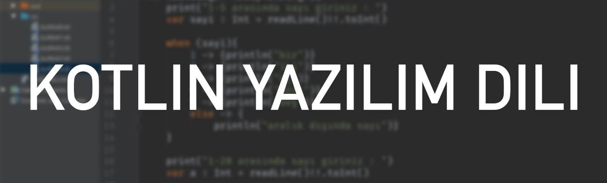

Kotlin Yazılım Dili
Prag merkezli yazılım şirketi JetBrains tarafından geliştirilen Kotlin, Java ile tamamen uyumlu çalışacak şekilde tasarlanmıştır. Kotlin’de yer alan herhangi bir Java çerçevesi veya kitaplığı geliştiriciler tarafından kullanılabilir. Halihazırda Java bulunurken neden Kotlin’in geliştirildiği sorularına geliştirici firma JetBrain, Java’dan daha iyi kod yazılabilen ve güvenlik ile performanstan ödün vermeyen bir dil ortaya çıkarmak için, şeklinde cevap vermiştir. Bu sebeple, Kotlin’in esas işlevinin daha güvenli kodları daha az kod satırı kullanarak yazmak olduğunu söyleyebiliriz. Geliştiriciler genelde, Java ve Kotlin dilleri arasında kıyas yaparak bu dillerden hangisinin daha üstün olduğunu ya da birinin diğerini bitirip bitiremeyeceğini tartışırlar. Fakat bu tartışma esasında hatalı bir yargıyla başlar çünkü zaten Kotlin hala Java ile beraber çalışmaktadır. Bundan dolayı birinin diğerini ortadan kaldırması söz konusu olamaz. Sadece, Kotlin Java’dan daha kolay ve hızlı bir kod yazım süreci sunar. Nesne yönelimli bir dil olmasından dolayı Java’ya göre bazı avantajları bulunmaktadır. Bunun için Java kullanarak geliştirme yapan şirketlerin kademeli olarak Kotlin’e geçtiklerini görmekteyiz.